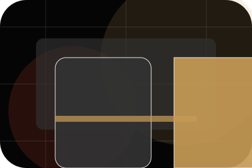
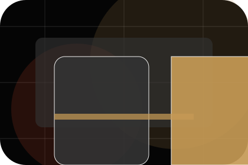
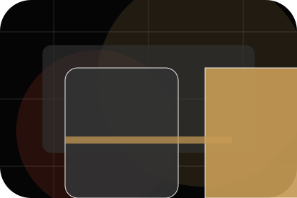
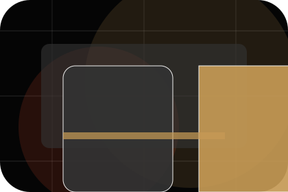
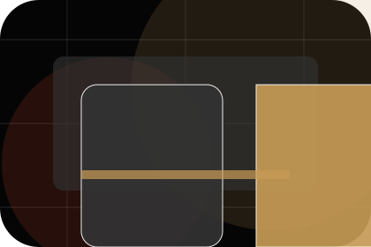
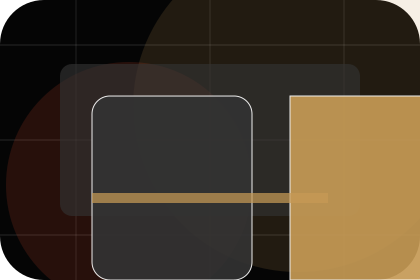
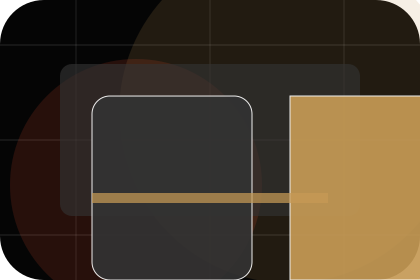
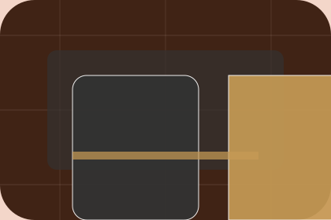

Hook gives the page a specific angle instead of repeating the navigation label.
Entertainment
Stage
Indie film poster system for excitement and access.

Home / 02
Hook with focused tension
Hook adds dark context to the home route, using the indie film poster system structure to support excitement and access before visitors choose a next step.
Stage uses poster event cards and focused copy to make the decision easier to scan, aligning the section with excitement and access rather than filling space.
Open VenueThe poster event cards show what to compare, what to avoid, and what matters most for entertainment, music & performance visitors.
The final cue points to a useful internal route so the section keeps the journey moving.
Home / 03
Upcoming with focused tension
Upcoming adds dark context to the home route, using the indie film poster system structure to support excitement and access before visitors choose a next step.
Stage uses poster event cards and focused copy to make the decision easier to scan, aligning the section with excitement and access rather than filling space.
Open ShowsContext
Upcoming gives the page a specific angle instead of repeating the navigation label.
Judgment
The poster event cards show what to compare, what to avoid, and what matters most for entertainment, music & performance visitors.
Direction
The final cue points to a useful internal route so the section keeps the journey moving.
Home / 04
Artists with focused tension
Artists adds dark context to the home route, using the indie film poster system structure to support excitement and access before visitors choose a next step.
Stage uses poster event cards and focused copy to make the decision easier to scan, aligning the section with excitement and access rather than filling space.
Open ArtistsContext
Artists gives the page a specific angle instead of repeating the navigation label.
Judgment
The poster event cards show what to compare, what to avoid, and what matters most for entertainment, music & performance visitors.
Direction
The final cue points to a useful internal route so the section keeps the journey moving.
Home / 05
Tickets with focused tension
Tickets adds dark context to the home route, using the indie film poster system structure to support excitement and access before visitors choose a next step.
Stage uses poster event cards and focused copy to make the decision easier to scan, aligning the section with excitement and access rather than filling space.
Open Tickets

Context
Tickets gives the page a specific angle instead of repeating the navigation label.
Home / 06
Media with focused tension
Media adds dark context to the home route, using the indie film poster system structure to support excitement and access before visitors choose a next step.
Stage uses poster event cards and focused copy to make the decision easier to scan, aligning the section with excitement and access rather than filling space.
Open PrivateContext
Media gives the page a specific angle instead of repeating the navigation label.

Judgment
The poster event cards show what to compare, what to avoid, and what matters most for entertainment, music & performance visitors.

Direction
The final cue points to a useful internal route so the section keeps the journey moving.
Dark poster hero
Choose ticket fit
Select the closest route and Stage keeps the next step, proof, and follow-up expectation aligned with excitement and access.
Home / 07
Stories behind reviews
Reviews converts customer proof into a useful buying signal: the problem, the experience, and what changed afterward.
Proof stays believable by focusing on situation, service experience, and practical change rather than vague praise or unsupported results.
Open GallerySituation
What the visitor needed before choosing Stage, written with enough context to feel real.
Experience
How the service, product, or support felt during the process, not just that it was good.

Change
What became easier to decide, complete, buy, book, or trust after the interaction.
Home / 08
Energy with focused tension
Energy adds dark context to the home route, using the indie film poster system structure to support excitement and access before visitors choose a next step.
Stage uses poster event cards and focused copy to make the decision easier to scan, aligning the section with excitement and access rather than filling space.
Open NewsContext
Energy gives the page a specific angle instead of repeating the navigation label.
Judgment
The poster event cards show what to compare, what to avoid, and what matters most for entertainment, music & performance visitors.
Direction
The final cue points to a useful internal route so the section keeps the journey moving.
Home / 09
Questions before you view tickets
Questions handles buying doubts directly so visitors can understand timing, fit, limits, and the safest next step.
Answers are short by design: enough to remove hesitation, not so much that the page turns into documentation before the visitor can act.
Open ContactQuestion
Questions gives the page a specific angle instead of repeating the navigation label.

Answer
The poster event cards show what to compare, what to avoid, and what matters most for entertainment, music & performance visitors.

Next Step
The final cue points to a useful internal route so the section keeps the journey moving.
What happens first?
Stage starts with a focused intake so the recommendation matches the visitor's context, risk, timing, and readiness.
How is scope kept clear?
Each route explains inclusions, exclusions, documents, timing, and the decision points that affect final delivery.
How is this site different?
The theme uses indie film poster system, poster event cards, and event calendar, ticket selector, artist filter rather than a shared template rhythm.
Dark poster hero
Choose ticket fit
Select the closest route and Stage keeps the next step, proof, and follow-up expectation aligned with excitement and access.
Home / 10
View Tickets
Stage closes the home route with a clear action, a quick reminder of the value, and a low-friction way to view tickets.
Visitors who are ready can use the primary action. Visitors who are still comparing can scan the section links, proof, and support routes before they view tickets.
View TicketsThe final block keeps the choice simple: act now, compare one more proof route, or send enough detail for a focused response.
View Ticketsexcitement and access
View Tickets
An entertainment site with film-poster rhythm, dark editorial cards, ticket routes, and venue proof. Home ends with a direct path to view tickets, plus enough context for visitors who still need to compare.

View Tickets